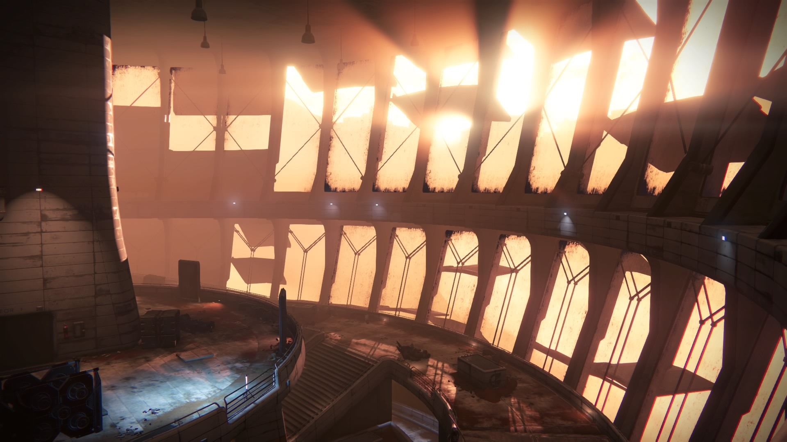
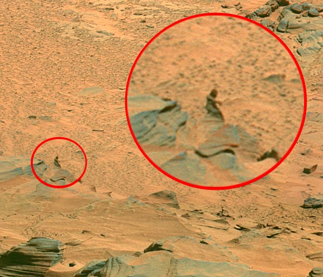

A nice place to be imprisoned
- Founded: 4.6 billion earth years ago
- Native Population: 19 Billion Martians
- Slave Population: 10,000 Human suckers
The once great population of Mars was once spread from pole to pole, before infighting resulted in civil war that left the surface cold, desolate, and void of usable atmosphere. The survivors of the conflict moved to bunkers underneath the poles, where we could filter the water from the ice caps to limited bunkers.


From that cold rebirth, the Martians became stronger, harder, and more advanced than any other beings in the system could ever imagine. Forged by conflict and bitter to the core, the Martians re-emerged from their lairs ready to pounce on the unsuspecting Earth colonists...
Upcoming Take Overs
- July 24: Roast-A-Pioneer Day
- July 31: Attack on Preston
- August 14: Attack on Fish Haven
- August 28: Attack on Soda Springs
- Septeber 6: Slave Labor Day